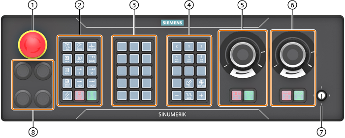
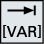

Anhand der Maschinensteuertafel MCP 2200c werden die Bedien- und Anzeigeelementeeiner Siemens Maschinensteuertafel exemplarisch dargestellt.
Übersicht

① | Not-Halt-Taster |
② | Keypad 1 (Betriebsartenblock) |
③ | Keypad 2 (Kundentasten) |
④ | Keypad 3 (Achsblock) |
⑤ | Powerride 2 (Spindle) + Keypad 3.2 |
⑥ | Powerride 1 (Feed) + Keypad 3.1 |
⑦ | Berechtigungsschlüsselschalter |
⑧ | 4x Einbauplatz für 22,5 mm Elemente mit Einschubstreifen |
Bedienelemente
Beschriftung der Tasten
Für maschinenspezifische Anpassungen sind die Tasten mit wechselbaren Tastenabdeckungen ausgeführt. Die Tastenabdeckungen sind mit Laser frei beschriftbar. Alternativ können Sie klare Tastenabdeckungen und Einlegeschilder verwenden.
Bedienelemente
NOT-HALT-Taster
| | Den Taster in Situationen betätigen, wenn: Menschenleben in Gefahr sind, Gefahr besteht, dass die Maschine oder das Werkstück beschädigt wird.
Alle Antriebe werden mit größtmöglichem Bremsmoment still gesetzt. |
 | Maschinenhersteller Zu weiteren Reaktionen durch die Betätigung des NOT-HALT-Tasters beachten Sie bitte die Angaben des Maschinenherstellers. |
RESET
Programmsteuerung
 | <SINGLE BLOCK> Einzelsatzmodus ein-/ausschalten. |
 | <CYCLE START> Die Taste wird auch als NC-Start bezeichnet. Die Abarbeitung eines Programms wird gestartet. |
 | <CYCLE STOP> Die Taste wird auch als NC-Stop bezeichnet. Die Abarbeitung eines Programms wird gestoppt. |
Betriebsarten, Maschinenfunktionen
 | <JOG> Betriebsart "JOG" wählen. |
| | <TEACH IN> Funktion "Teach In" wählen. |
 | <MDA> Betriebsart "MDA" wählen. |
 | <AUTO> Betriebsart "AUTO" wählen. |
 | <REPOS> Rückpositionieren, Kontur wieder anfahren. |
 | <REF POINT> Referenzpunkt anfahren. |
|  | Inc <VAR> (Incremental Feed Variable) Schrittmaß mit variabler Schrittweite fahren. |
 ...  | Inc (Incremental Feed) Schrittmaß mit vorgegebener Schrittweite von 1, ..., 10000 Inkrementen fahren. |
| Maschinenhersteller Die Bewertung des Inkrementenwertes ist von einem Maschinendatum abhängig. |
Verfahrachsen mit Eilgangüberlagerung und Koordinatenumschaltung
 ...  | Achstasten Achse anwählen.
|
 ...  | Richtungstasten Die zu verfahrende Richtung anwählen. |
 | <RAPID> Achse im Eilgang verfahren bei gedrückter Richtungstaste. |
| | <WCS MCS> Zwischen Werkstückkoordinatensystem (WKS) und Maschinenkoordinatensystem (MKS) umschalten. |
Spindelsteuerung mit Overrideschalter
 | <SPINDLE STOP> Spindel stoppen. |
| | <SPINDLE START> Spindel wird freigegeben. |
Vorschubsteuerung mit Overrideschalter
| | <FEED STOP> Bearbeitung des laufenden Programms stoppen und Achsantriebe stillsetzen. |
| | <FEED START> Freigabe zur Abarbeitung des Programms im aktuellen Satz sowie Freigabe zum Hochfahren auf den vom Programm vorgegebenen Vorschubwert. |